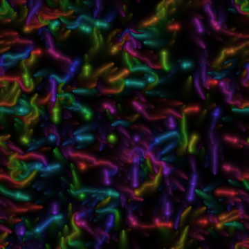
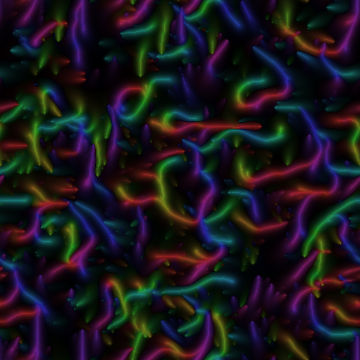

Jev in the decider seat
← all the experiments · the composer · the lab · fluoddity
Fluoddity is a particle swarm that paints a trail field and then steers on it. Each particle senses the field at two points off its own heading and a nonlinear brain turns those readings into a force. Here that brain is replaced by one typed question per particle — and the rule it replaced runs beside it, on the same genome, the same field and the same starting conditions.
The question this answers is the operator's: does the same system emerge, and does Jev rebel? The answer is neither. It legislates — it applies one consistent, stateable policy to 1024 heterogeneous states where the genome is an exact coin flip. That comes from the individual decisions, not from the swarm's collective statistics, and a control on this page shows why the collective statistics could never have answered it.
This page spent three revisions saying the opposite of what it says now. It said the control arm could not be fluoddity at 256 particles, that the field was dead by necessity, and that fluoddity's own interestingness score was therefore untestable here. All three were wrong, and they were wrong because of three faults in the port, not because of the particle count. Fixed, the same 256 particles reproduce fluoddity — verified against fluoddity's actual WebGL engine, which this port had never once been compared with.
Correction — it was not fluoddity's field, and the brain was nobody's
The operator, a third time: "it still doesn't look right on fluoddity. Maybe you could find a particularly active brain?" There was a brain to find. There were also two deeper faults, and the brain only mattered once they were fixed.
1. The canvas holds velocity. This port put a colour in it.
fluoddity's brush pass writes vec4(v_vel*k, 0, 0) — the particle's
own velocity vector — and the sensors read that vector back. This port invented a colour
(hue from atan2 of the brain's force output) and deposited that instead, so the
quantity the swarm steered on was not the quantity fluoddity's swarm steers on. Three more
defects rode along with it:
- The blend is a lerp, not an accumulation.
canvas = blur(canvas)·persistence + (1−persistence)·brush. The port multiplied and added, which is unbounded and in no particular unit — and therefore needed a fudge factor to sit in a plausible range. That fudge factor is the "one constant calibrated rather than ported" this page has been listing as a caveat. It is gone. With the right blend there is nothing to calibrate. inkis render-only. It appears inFRAG_DISPLAYand nowhere else; fluoddity's own config files it under "// render-only". The port put it in the deposit, where it changed the physics — so two genomes differing only in exposure were two different organisms.- The descriptors were reading the wrong image.
fluoddity/descriptors.jsreads the displayed canvas — tone-mapped, the picture a person sees. The port read the raw trail, so everyfillandstructon this page was measured on an image nobody ever looked at.
2. There is no default brain, and 0.5 was the worst one
defaultConfig() sets rule_seed: Math.random().
The seed is the brain — it generates the ten Gaussian centres that are the whole
sensor→force map — and fluoddity's own engine says what to do about that:
"The rule_seed
(a 10-term Fourier black box) still dominates whether a given draw is alive, so callers that
want a guaranteed-lively organism should reject-sample on fitness on top."
— engine.js
This port ran evalRule(0.5, …): the literal 0.5, chosen by nobody,
never looked at. On the corrected field, at the same 256 particles and the same matched brush
that make wurms01 read alive at fill 0.55, seed 0.5 reads
dead at fill 0.000 — the fourth frame below. The 121 organisms people have
published to fluoddity's gallery are pulled into lab/fluoddity-gallery.json and
ranked by eval/swarm-brains.mjs on fluoddity's own fitness2; that is
how wurms01 was chosen, and it is how fluoddity itself says to choose one.
3. And the brush was fluoddity's raw one, not fluoddity's matched one
fluoddity's viewcontrols.js already solves "the same organism on a
surface with a different particle count": scale the brush by
√(M_REF / count·brush²), which at 256 particles is ×13.1. This page was
using the unscaled brush, so the field really was near-empty — by our choice, not by the
token budget's.
What it looks like fixed


The organism is wurms01, and it is
defaultConfig() with two fields changed — 64 cohorts and that seed. Every
other knob is the default. The difference between the last frame and the first three is the
brain and the number of species, and nothing else.
Verified numerically as well as by eye. Same genome, same settings (256 particles, dim 480, 400 steps), the port against fluoddity's real engine:
| fluoddity's engine | this port | ratio | |
|---|---|---|---|
| canvas |v|, mean | 7.53e−10 | 9.07e−10 | 1.21× |
| canvas |v|, max | 2.35e−7 | 3.41e−7 | 1.45× |
Float64 against the GPU's float32, 400 steps into a chaotic system, with a diffusion kernel that is a texture fetch there and an array read here. Agreement to 20–45% is as close as those two things get, and the page had been carrying "never compared against the WebGL engine" as its top caveat since it shipped.
What this retracts
- "At 256 particles you get fluoddity's measure or its dynamics, not both." Wrong. Measured across a sweep from 256 to 40,000 on the corrected port, 256 gives the FULLEST and most structured field of the whole range — fill 0.574, struct 0.90 — because fluoddity's own energy match keeps the field constant as the count falls.
- "The field reads dead in every arm, so
fitness2is untestable here." Wrong, and it was the most costly one:fitness2is the measure this whole experiment should have been scored on, and it is not only testable but decisive. - "The substrate limit is really about density; the control is a control and not a reproduction." The density argument was arithmetic laid over three bugs.
- "One constant was calibrated, not ported." There is no such constant now.
- And the order-parameter numbers below it, which were measured on the old field.
One fault the fix exposed, and it is the worst of them. The port returned
tanh(lateral) and called it "the turn, in units of the rule's own scale". That is
only a unit conversion if the argument is already about 1 — and on the correct field the
rule's own lateral is ~0.002, so the rule was steering on a ladder three orders
of magnitude below the one the model answers on. The old field's 1000× over-strength was
hiding it by driving the brain into saturation. The scale is now MEASURED from the rule
arm, before any other arm runs, so ±1 means "as hard as this brain itself ever turns".
Correction — the first version of this page measured the wrong world
Published 2026-09-20, corrected the same day. The operator pointed out that
fluoddity's interaction comes from all the particles starting in a dense cluster. It
does, and chasing that found nine divergences between this port's genome and
fluoddity's own defaultConfig() — three of them structural:
initial_conditions: 0spawns the cohorts as tight blobs on a grid, jitter 0.019 on a torus spanning 2 — about 1% of the world across. This port scattered every particle uniformly instead. A trail field is stigmergic: a particle can only steer on what others have already laid down. So packed particles have a gradient immediately, and particles spread thin over a torus have nothing and never will. It was not a weaker fluoddity, it was a non-interacting one.cohorts: 16, and the cohort index is fed to the brain — so fluoddity runs sixteen species with different rules. This port ran one.- Six more fields were simply wrong: drag, force, trail persistence, ink, hue, and an
invented
mutation_scale. The code comment claimed the genome was "taken fromdefaultConfig()". It was not.
And polarization was the wrong measure. Each cohort expands as a starburst, so particles radiate outward, their headings cancel, and global polarization reads ≈0 however structured the swarm is. The 0.767 first reported for the rule was an artefact of the wrong spawn putting every particle alone in open space.
Retracted: rule 0.767 / frozen 0.317 / jev 0.226 / random 0.026, and the reading that went with it — "the flock needs someone to turn the wrong way" — which rested on the rule producing an alignment it does not in fact produce. Everything below is re-measured on the corrected simulation.
And the canvases below were showing half of it. A canvas with no
width/height attributes is 300×150, not square. The sizing code read
the width, compared it against the default it had just read, found no difference and never set
the height — so the backing store stayed 150 tall and CSS stretched that half-torus across a
square box. Eight of the sixteen cohorts were never drawn, and the eight that were came
out at double height. Caught by counting blobs in a screenshot against the sixteen the
simulation reports — the numbers on this page were always measured from the simulation, never
from the picture, so nothing here changes. The picture does.
What you are looking at is fluoddity's own display
pass — the trail field coloured by flow direction and tone-mapped exactly as
FRAG_DISPLAY does it, with no exposure gain to flatter it. The white dots are the
256 particles painting it. Switch the brain to seed 0.5 to see what this page
showed for three revisions: the same physics, the same particles, a black canvas.
steps/call is fluoddity's own substeps.
A tick here is one physics step, and fluoddity's playground runs eight of them per frame at
60fps — so a second of watching fluoddity is about 480 steps, and this page spends a model
call on each one. Holding a decision for eight steps is how it gets far enough to form
anything inside a watchable number of calls. It is a deviation and it is flagged as one: the
shader re-evaluates its rule every step. Set it to 1 for the configuration the measurements
below were taken at.
Every arm shares the genome, the field, the integration, the axial thrust, the seed and the initial conditions. The only thing that differs is who answers “how hard should this particle turn?” Jev's arm costs one call per tick carrying every particle's reading and one question each; the other three cost nothing, which is why there is no excuse for leaving them out.
The finding, in one chart
Each dot is one particle's decision at one tick. Across is the only thing it can steer on — how much more trail lies to its left than its right, as the state document already computed for it. Up is the turn that was chosen.
Jev's dots fall on a line. The rule's are a cloud. The model found one stateable policy — follow the trail — and applied it to every particle. The fluoddity genome has no such policy: it is an arbitrary point in rule space, not a rule anyone would write down.
Measured over 1024 particle-decisions on the corrected
simulation: Jev steers toward the stronger trail on 94.4% of them,
r = −0.644. The genome does so on 50.1%, r = 0.005 — a coin
flip with respect to the one quantity a particle can steer on. On the first, broken version
those read 92.5% and 34.8%; correcting the world made the contrast cleaner, not
weaker.
Dispersal over time
Dispersal is how far a cohort has travelled from where it spawned. It reads the particles, not the picture. This chart used to plot polarization, the classical swarm order parameter — that was the wrong measure here: fluoddity spawns sixteen tight blobs that expand as starbursts, so the headings cancel and every arm sits near 0.2 whatever it does.
Measured headless, on fluoddity's own scoreboard
200 ticks, 256 particles, 402 calls,
eval/swarm-gate.mjs, genome wurms01. fitness2 is
fluoddity's own interestingness score, copied verbatim from its descriptors.js
and load-bearing across its whole site. This page previously had to report it as untestable.
| arm | fitness2 | cohort coherence | fill | struct | mean |turn| | verdict |
|---|---|---|---|---|---|---|
| rule — fluoddity's own brain | 0.0975 | 0.679 | 0.627 | 0.86 | 0.468 | frozen |
| jev — plain framing | 0.0335 | 0.473 | 0.731 | 0.82 | 0.176 | alive |
| jev — told the swarm's objective | 0.0320 | 0.467 | 0.734 | 0.82 | 0.152 | alive |
| frozen — no steering at all | 0.0265 | 0.445 | 0.750 | 0.82 | 0.000 | alive |
| random — same rungs | 0.0253 | 0.446 | 0.754 | 0.82 | 0.597 | alive |
The rule scores 2.9× Jev and 3.9× random on the measure fluoddity itself uses to decide what is worth keeping. You can see it in the four canvases above: the rule's swarm makes long separated filaments, and the other three make a uniform wash. Cohort coherence says the same thing — 0.679 against 0.445–0.473.
Jev is a small but real step above doing nothing — 0.0335 against frozen's 0.0265 and random's 0.0253, +26% and +32% — and it is the most conservative active steerer on the board again, mean turn 0.176 against the rule's 0.468 on the identical ladder. In fluoddity's phenotype space both Jev arms land essentially on top of frozen and random (distance 0.002–0.004) and far from the rule (0.045).
So the original reading survives on a better scoreboard, and sharpens. One consistent, stateable policy — follow the trail — applied to 256 heterogeneous states produces a wash. An arbitrary nonlinear brain, which follows nothing and is an exact coin flip with respect to the trail, produces the organism. It does not rebel; it legislates — and here legislating is what stops the interesting thing happening.
Agreement with the rule is 49.8% and 49.5% — chance, on a symmetric ladder. The two framings remain nearly indistinguishable, which is still what "there is no instruction channel" looks like when you try to use one.
The control that demotes the table above: dispersal only sees how hard you turn
Line up the five arms by how hard they steer and the order parameter falls on a straight line. Dispersal is 0.0067 + 0.0552 × mean |turn|, with r = 0.985.
| arm | mean |turn| | dispersal | the line predicts | residual |
|---|---|---|---|---|
| rule | 0.713 | 0.0475 | 0.0461 | +0.0014 |
| random | 0.597 | 0.0413 | 0.0397 | +0.0016 |
| jev — plain | 0.360 | 0.0233 | 0.0266 | −0.0033 |
| jev — objective | 0.323 | 0.0222 | 0.0246 | −0.0024 |
| frozen | 0.000 | 0.0094 | 0.0067 | +0.0027 |
So "both Jev arms land nearest frozen" might be nothing more than "Jev turns gently" — a fact about how hard it steers, not about where. Those two only come apart under a control that keeps the magnitudes and destroys the direction: replay each arm's own per-tick turn magnitudes, with the sign chosen by a coin. Whatever an arm scores above its own sign shuffle is what its direction bought.
| arm | dispersal | sign-shuffled (12 draws) | excess | z |
|---|---|---|---|---|
| rule | 0.0472 | 0.0446 ± 0.0013 | +5.8% | 2.0 |
| random | 0.0409 | 0.0406 ± 0.0014 | +0.7% | 0.2 |
| jev — plain | 0.0217 | 0.0222 ± 0.0007 | −2.2% | −0.7 |
Jev's direction buys nothing the order parameters can
see. Shuffle its signs and the swarm disperses the same amount — very slightly more, well
inside the noise. random at 0.2 is the control on the control: an arm with no
direction policy by construction must score zero here, and it does. Even the rule, whose
direction is the whole of fluoddity's brain, clears its shuffle by only 5.8%.
What this retracts. The order-parameter distances in the table above —
Jev nearest frozen, at 0.146 and 0.133 — are a restatement of "Jev turns gently"
and carry almost no information about what Jev decided. They have survived three corrections
by being robust to everything except the question of whether they measure anything.
What this leaves standing, and sharpens. The policy diagnostic is the load-bearing result, and it is orthogonal to all of this: it correlates the turn with the sensor asymmetry, which is direction and nothing else. Jev 94.4%, r = −0.644; the genome 50.1%, r = 0.005. Magnitude cannot produce that number and cannot fake it. The right reading of this page is that the swarm's collective statistics were the wrong place to look and the individual decisions were the right one.
The cheaper control would have been wrong. Matching only the mean
|turn| — turn by a fixed amount, flip a coin — understates every arm, because dispersal
depends on the spread of |turn| and not only its mean. Against that null even
random appears to earn 22% excess dispersal at z = 7.9, which is the null being
biased rather than random having a policy. Replaying each arm's own magnitudes is what makes
the comparison honest. node mega/jev/eval/swarm-direction.mjs --jev
And the same control, run again on the corrected
simulation against fitness2, says the instrument was the problem. Identical
shuffle — the rule's own per-step magnitudes, signs by coin — scored on fluoddity's own
measure instead of on dispersal:
| the rule's own turns | fitness2 | cohort coherence |
|---|---|---|
| as the rule chose them | 0.1433 | 0.679 |
| same magnitudes, signs shuffled (8 draws) | 0.0342 ± 0.0035 | 0.447 ± 0.006 |
| what the direction bought | +319%, z ≈ 31 | +52% |
Dispersal saw 5.8% of the rule's direction. fluoddity's own interestingness score sees 319% of it. The direction was always there; the order parameters simply could not read it. That is the honest verdict on the section above — not that the rule's steering did not matter, but that this page was measuring it with the wrong instrument, on a substrate where the right instrument could not be used.
Is this even a swarm? The arrangement, tested
Everything above runs one call carrying a table of every particle, with one question per row. That is the wide arrangement, and it is not really a swarm — the question about particle 37 can see all 256 rows, which is more context than a local agent has, not less. So “it applied one uniform policy” might have been an artefact of the arrangement rather than a fact about the model.
The control is the real swarm: 256 separate calls, each carrying only that particle's own two sensor readings and nothing else. Same tick, same readings, so nothing differs but how the state is carried.
| shared — 1 call | split — 256 calls | |
|---|---|---|
| input tokens | 25,667 | 114,432 (4.5×) |
| follows the trail | 88.3% | 92.6% |
| correlation with sensor asymmetry | −0.564 | −0.604 |
| mean confidence | 0.512 | 0.377 |
| agreement between the two: r = 0.832, same rung 71.5%, same sign 84.8%, mean turn difference 0.120 on a ladder spanning 2.0 | ||
Splitting the state does not beat sharing it here. It costs 4.5× the tokens for decisions that agree on sign 85% of the time and differ by 6% of the ladder's range. If your agents' slices are this small and this independent, the wide arrangement is the right one on cost alone.
And the conformity finding survives the control — it is stronger in the real swarm. The split arrangement follows the trail on 92.6% of decisions against the shared one's 88.3%. So the uniform policy was never an artefact of letting one call see everything. Determinism explains why: when the slice is the whole input, two particles with identical readings must get identical answers.
The odd number is the confidence. Seeing all 256 rows made it markedly more confident about each individual particle — 0.512 against 0.377 — while making it slightly less policy-consistent. More context, more confidence, no more agreement with itself. That is a limit this project has now measured three times in three domains: the self-check tracks how much context it has rather than how much that context helps.
Wall clock was 1.2 s against 590 s, but that is our own proxy's 30-per-minute rate limit, not the model's throughput. The token ratio is the honest comparison.
What this page will not claim
- This is a CPU port of fluoddity's shader, not fluoddity. It is now compared against the live WebGL engine — run headless under SwiftShader — and agrees to 20–45% on field statistics and by eye. Every arm runs the same port, so the comparison between arms was always fair; what is new is that the substrate is fluoddity's.
- One genome. Fluoddity's evolvable box has 13 knobs and all of them are fixed here. A different seed is a different brain and could give a different answer.
- Only steering is under test. Axial thrust comes from the deterministic rule in every arm, including Jev's.
- The order parameters measure magnitude, not direction. Established by a sign
shuffle.
fitness2does see direction, which is why it is now the headline measure and dispersal is not. - One genome, chosen for being alive.
wurms01is one of 121 published organisms and it was picked because it scores well — which is fluoddity's own advice ("reject-sample on fitness") and is also a selection this page made after seeing scores. A different brain is a different system and could give a different answer. - The port agrees with the engine on field statistics and by eye, at one genome, at two particle counts, at 400 steps. That is a comparison, not a proof of equivalence, and two float32-vs-float64 trajectories in a chaotic system diverge whatever the pictures look like.
Two reasons the control did not look like fluoddity
The operator again: "it's not currently fluoddity I see on the control. Are we painfully short here or is there a bug?" Both, and the bug was the bigger half.
The bug: the strafe term was missing entirely. Fluoddity's shader moves a particle two ways, and this port implemented only the smaller one:
force *= u_global_force_mult/400.0; strafe *= u_global_force_mult/20.0; <- twenty times larger vel = vel*u_drag + force; pos += vel; pos += strafe*u_strafe_power; <- and it moves position DIRECTLY
The rule's brain returns four numbers: the first two are force, the second two are strafe. The port used the first two and discarded the rest. So it ran the term that passes through drag and dropped the one that is twenty times bigger and bypasses drag altogether. Fixing it took dispersal at 300 ticks from 0.028 to 0.117 and gave the cohorts real internal structure instead of leaving them sitting still.
The part that is not a bug. Running the control at 1024 particles and letting the clock run far past anything the model arm could afford:
| tick | dispersal | field fill | fluoddity's verdict |
|---|---|---|---|
| 200 | 0.063 | 0.055 | frozen |
| 600 | 0.148 | 0.015 | sparse |
| 1200 | 0.305 | 0.003 | dead |
| 2000 | 0.551 | 0.003 | dead |
A cohort has to travel about 0.22 before it touches its neighbour on the grid. It gets there around tick 1200 — and by then the field is dead, so there is nothing left for the cohorts to interact through. Fluoddity survives that same spread because it has fifty-four times more particles to spread with.
So the substrate limit is really about density. Also retracted.
That conclusion came from running the old field, the old brain and the unmatched brush for
1024 ticks and watching it die. With fluoddity's own energy match the field does not thin as
the cohorts spread, because the brush grows to compensate — which is exactly what that
normalisation is for. The density argument was arithmetic laid over three bugs.
One invention, flagged. Strafe has a lateral component, which is steering. Giving it entirely to the rule would leave the model controlling a sliver of the lateral response; giving it entirely to the model would hand over a magnitude the rule should set. So the model's turn scales the lateral strafe while the rule sets its magnitude and its axial part. That is a design decision, not a port, and it is marked as one in the code.
At this scale you get fluoddity's measure or its dynamics, not both — RETRACTED
This section is wrong and is kept because a wrong result published is worth more than a wrong result deleted. It is careful arithmetic about brush geometry and sensor separation laid over three bugs, and it concluded that 256 particles could not carry fluoddity's field. Measured on the corrected port across a sweep from 256 to 40,000 particles, 256 gives the fullest and most structured field in the range (fill 0.574, struct 0.90) because fluoddity's own energy match holds the field constant as the count falls. Its one surviving true observation is that sensor separation is an absolute length, so there is still a resolution below which the swarm is blind — that is why dim stays at 480.
Fluoddity runs 55,000 particles. A typed question per particle caps out around 256, because 256 questions is already 30,559 input tokens against a 32,768 ceiling. That gap is not a detail — it decides what can be measured.
| configuration | the field | sensor asymmetry | the arms |
|---|---|---|---|
| dim 128, energy-matched brush | alive, fill 0.43 | 1.3% | identical — frozen scores the same as the rule |
| dim 480, fluoddity's own brush | dead, fill 0.000 | 6.7% | separate hard — 0.767 vs 0.026 |
| dim 480, fluoddity's MATCHED brush (×13.1) | alive, fill 0.55, struct 0.90 | — | what the page runs now |
At dim 128 the two sensors sit 0.38 pixels apart and
read the same texel. There is no gradient, so no decider can matter, and steering that does
nothing scores the same as fluoddity's brain. Fluoddity's own engine warns that
(dim, count, brush) is a hidden substrate axis and that field energy goes as
count·brush² — true, but energy is not the thing to preserve. Matching it at
256 particles gives each one a brush 14.6× fluoddity's while it moves 0.10 px per tick: a
stationary blob 60× wider than its own motion. Structure needs path-per-tick greater than brush
radius. And sensor separation is an absolute length that does not scale with particle count
at all, so below a resolution the swarm is simply blind.
The harness was lying about which way was left
Worth publishing because it nearly shipped as the finding. The state document called one sensor LEFT. Measured directly, it is the sensor on the side a positive turn steers toward — and the ladder calls a positive turn “toward the right”. The two labels named opposite sides of the same physical direction.
So when the model read “the left sensor is stronger” and answered “turn left” — ordinary trail-following, the most sensible policy available — the harness applied a force away from the stronger trail.
| over 1024 particle-decisions | before the fix | after |
|---|---|---|
| Jev steers toward the stronger trail | 1.8% | 92.5% |
| the fluoddity rule does | 39.2% | 34.8% |
Every previous instance of this project's recurring lesson was a missing input. This one was a wrong input — and a wrong input produces a coherent, confident, exactly-backwards result rather than a visibly bad one. It is pinned by a test now: a patch is deposited on one side, and the test asserts which sensor reads it, which turn steers toward it, and that the document's columns agree with both.